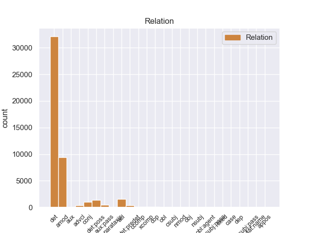
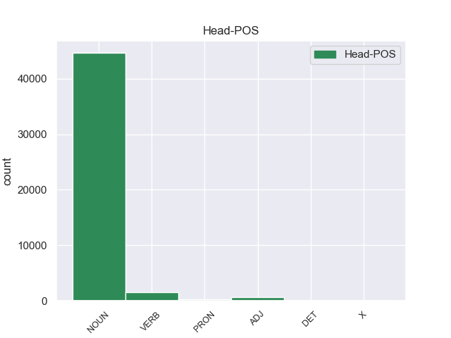
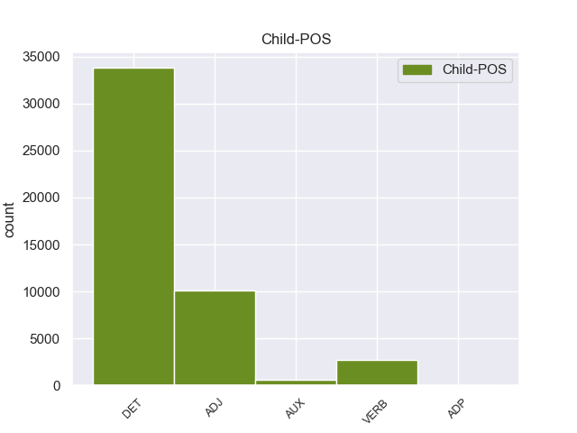

Distribution of features within this leaf



Agreement Rules sorted by frequency.
- When the dependent token is the determiner(det) of the head token, and the dependent token is DET.
1 Mohammad _ _ _ _ 0 _ _ _
2 Khatami _ _ _ _ 0 _ _ _
3 , _ _ _ _ 0 _ _ _
4 il _ _ _ _ 0 _ _ _
5 presidente _ _ _ _ 0 _ _ _
6 di _ _ _ _ 0 _ _ _
7 l’ _ _ _ _ 0 _ _ _
8 Iran _ _ _ _ 0 _ _ _
9 , _ _ _ _ 0 _ _ _
10 si _ _ _ _ 0 _ _ _
11 è _ _ _ _ 0 _ _ _
12 impegnato _ _ _ _ 0 _ _ _
13 a _ _ _ _ 0 _ _ _
14 ricostruire _ _ _ _ 0 _ _ _
15 il _ _ _ _ 0 _ _ _
16 centro _ _ _ _ 0 _ _ _
17 di _ _ _ _ 0 _ _ _
18 la il DET RD Definite=Def|Gender=Fem|Number=Sing|PronType=Art 19 det 19:det _
19 città città NOUN S Gender=Fem 0 _ _ _
20 di _ _ _ _ 0 _ _ _
21 Bam _ _ _ _ 0 _ _ _
22 entro _ _ _ _ 0 _ _ _
23 2 _ _ _ _ 0 _ _ _
24 anni _ _ _ _ 0 _ _ _
25 . _ _ _ _ 0 _ _ _
1 Gli _ _ _ _ 0 _ _ _
2 edifici _ _ _ _ 0 _ _ _
3 di _ _ _ _ 0 _ _ _
4 il _ _ _ _ 0 _ _ _
5 centro _ _ _ _ 0 _ _ _
6 storico _ _ _ _ 0 _ _ _
7 erano _ _ _ _ 0 _ _ _
8 costruiti _ _ _ _ 0 _ _ _
9 con _ _ _ _ 0 _ _ _
10 l’ _ _ _ _ 0 _ _ _
11 argilla argilla NOUN S Gender=Fem|Number=Sing 0 _ _ _
12 rossa rosso ADJ A Gender=Fem|Number=Sing 11 amod 11:amod _
13 di _ _ _ _ 0 _ _ _
14 il _ _ _ _ 0 _ _ _
15 deserto _ _ _ _ 0 _ _ _
16 , _ _ _ _ 0 _ _ _
17 un _ _ _ _ 0 _ _ _
18 materiale _ _ _ _ 0 _ _ _
19 molto _ _ _ _ 0 _ _ _
20 fragile _ _ _ _ 0 _ _ _
21 . _ _ _ _ 0 _ _ _
1 Il _ _ _ _ 0 _ _ _
2 riso _ _ _ _ 0 _ _ _
3 integrale _ _ _ _ 0 _ _ _
4 , _ _ _ _ 0 _ _ _
5 cioè _ _ _ _ 0 _ _ _
6 il _ _ _ _ 0 _ _ _
7 riso _ _ _ _ 0 _ _ _
8 con _ _ _ _ 0 _ _ _
9 i _ _ _ _ 0 _ _ _
10 chicchi chicco NOUN S Gender=Masc|Number=Plur 0 _ _ _
11 coperti coprire VERB V Gender=Masc|Number=Plur|Tense=Past|VerbForm=Part 10 acl 10:acl _
12 da _ _ _ _ 0 _ _ _
13 la _ _ _ _ 0 _ _ _
14 buccia _ _ _ _ 0 _ _ _
15 , _ _ _ _ 0 _ _ _
16 contiene _ _ _ _ 0 _ _ _
17 anche _ _ _ _ 0 _ _ _
18 molta _ _ _ _ 0 _ _ _
19 fibra _ _ _ _ 0 _ _ _
20 . _ _ _ _ 0 _ _ _
1 Per _ _ _ _ 0 _ _ _
2 visitare _ _ _ _ 0 _ _ _
3 le _ _ _ _ 0 _ _ _
4 mostre _ _ _ _ 0 _ _ _
5 possiamo _ _ _ _ 0 _ _ _
6 acquistare _ _ _ _ 0 _ _ _
7 il _ _ _ _ 0 _ _ _
8 biglietto _ _ _ _ 0 _ _ _
9 il _ _ _ _ 0 _ _ _
10 giorno _ _ _ _ 0 _ _ _
11 stesso _ _ _ _ 0 _ _ _
12 di _ _ _ _ 0 _ _ _
13 la _ _ _ _ 0 _ _ _
14 nostra nostro DET AP Gender=Fem|Number=Sing|Poss=Yes|PronType=Prs 15 det:poss 15:det:poss _
15 visita visita NOUN S Gender=Fem|Number=Sing 0 _ _ _
16 in _ _ _ _ 0 _ _ _
17 le _ _ _ _ 0 _ _ _
18 sedi _ _ _ _ 0 _ _ _
19 di _ _ _ _ 0 _ _ _
20 le _ _ _ _ 0 _ _ _
21 varie _ _ _ _ 0 _ _ _
22 mostre _ _ _ _ 0 _ _ _
23 . _ _ _ _ 0 _ _ _
1 Durante _ _ _ _ 0 _ _ _
2 questa _ _ _ _ 0 _ _ _
3 riunione _ _ _ _ 0 _ _ _
4 , _ _ _ _ 0 _ _ _
5 i _ _ _ _ 0 _ _ _
6 rappresentanti _ _ _ _ 0 _ _ _
7 di _ _ _ _ 0 _ _ _
8 180 _ _ _ _ 0 _ _ _
9 Paesi _ _ _ _ 0 _ _ _
10 e _ _ _ _ 0 _ _ _
11 400 _ _ _ _ 0 _ _ _
12 ragazzi _ _ _ _ 0 _ _ _
13 e _ _ _ _ 0 _ _ _
14 ragazze _ _ _ _ 0 _ _ _
15 hanno _ _ _ _ 0 _ _ _
16 parlato parlare VERB V Gender=Masc|Number=Sing|Tense=Past|VerbForm=Part 0 _ _ _
17 di _ _ _ _ 0 _ _ _
18 i _ _ _ _ 0 _ _ _
19 problemi _ _ _ _ 0 _ _ _
20 di _ _ _ _ 0 _ _ _
21 i _ _ _ _ 0 _ _ _
22 bambini _ _ _ _ 0 _ _ _
23 e _ _ _ _ 0 _ _ _
24 hanno _ _ _ _ 0 _ _ _
25 cercato cercare VERB V Gender=Masc|Number=Sing|Tense=Past|VerbForm=Part 16 conj 16:conj:e _
26 una _ _ _ _ 0 _ _ _
27 soluzione _ _ _ _ 0 _ _ _
28 . _ _ _ _ 0 _ _ _
1 Durante _ _ _ _ 0 _ _ _
2 il _ _ _ _ 0 _ _ _
3 terremoto _ _ _ _ 0 _ _ _
4 in _ _ _ _ 0 _ _ _
5 Iran _ _ _ _ 0 _ _ _
6 , _ _ _ _ 0 _ _ _
7 sono _ _ _ _ 0 _ _ _
8 morte _ _ _ _ 0 _ _ _
9 moltissime _ _ _ _ 0 _ _ _
10 persone _ _ _ _ 0 _ _ _
11 e _ _ _ _ 0 _ _ _
12 il _ _ _ _ 0 _ _ _
13 centro _ _ _ _ 0 _ _ _
14 storico _ _ _ _ 0 _ _ _
15 di _ _ _ _ 0 _ _ _
16 la _ _ _ _ 0 _ _ _
17 città _ _ _ _ 0 _ _ _
18 di _ _ _ _ 0 _ _ _
19 Bam _ _ _ _ 0 _ _ _
20 è _ _ _ _ 0 _ _ _
21 stato essere AUX VA Gender=Masc|Number=Sing|Tense=Past|VerbForm=Part 23 aux:pass 23:aux:pass _
22 completamente _ _ _ _ 0 _ _ _
23 distrutto distruggere VERB V Gender=Masc|Number=Sing|Tense=Past|VerbForm=Part 0 _ _ _
24 . _ _ _ _ 0 _ _ _
1 La _ _ _ _ 0 _ _ _
2 Costituzione _ _ _ _ 0 _ _ _
3 italiana _ _ _ _ 0 _ _ _
4 prevede _ _ _ _ 0 _ _ _
5 4 _ _ _ _ 0 _ _ _
6 tipi _ _ _ _ 0 _ _ _
7 di _ _ _ _ 0 _ _ _
8 referendum _ _ _ _ 0 _ _ _
9 : _ _ _ _ 0 _ _ _
10 abrogativo abrogativo ADJ A Gender=Masc|Number=Sing 0 _ _ _
11 , _ _ _ _ 0 _ _ _
12 territoriale _ _ _ _ 0 _ _ _
13 , _ _ _ _ 0 _ _ _
14 consultivo consultivo ADJ A Gender=Masc|Number=Sing 10 conj 6:amod|10:conj:e _
15 e _ _ _ _ 0 _ _ _
16 costituzionale _ _ _ _ 0 _ _ _
17 . _ _ _ _ 0 _ _ _
1 Il _ _ _ _ 0 _ _ _
2 centro _ _ _ _ 0 _ _ _
3 storico _ _ _ _ 0 _ _ _
4 era _ _ _ _ 0 _ _ _
5 la _ _ _ _ 0 _ _ _
6 parte _ _ _ _ 0 _ _ _
7 più _ _ _ _ 0 _ _ _
8 antica _ _ _ _ 0 _ _ _
9 di _ _ _ _ 0 _ _ _
10 Bam _ _ _ _ 0 _ _ _
11 che _ _ _ _ 0 _ _ _
12 era _ _ _ _ 0 _ _ _
13 patrimonio _ _ _ _ 0 _ _ _
14 artistico _ _ _ _ 0 _ _ _
15 di _ _ _ _ 0 _ _ _
16 tutta tutto DET T Gender=Fem|Number=Sing|PronType=Tot 18 det:predet 18:det:predet _
17 l’ _ _ _ _ 0 _ _ _
18 umanità umanità NOUN S Gender=Fem|Number=Sing 0 _ _ _
19 . _ _ _ _ 0 _ _ _
1 Il _ _ _ _ 0 _ _ _
2 titolo titolo NOUN S Gender=Masc|Number=Sing 0 _ _ _
3 di _ _ _ _ 0 _ _ _
4 la _ _ _ _ 0 _ _ _
5 canzone _ _ _ _ 0 _ _ _
6 che _ _ _ _ 0 _ _ _
7 Luciano _ _ _ _ 0 _ _ _
8 Ligabue _ _ _ _ 0 _ _ _
9 ha _ _ _ _ 0 _ _ _
10 composto comporre VERB V Gender=Masc|Number=Sing|Tense=Past|VerbForm=Part 2 advcl 2:advcl:che _
11 per _ _ _ _ 0 _ _ _
12 il _ _ _ _ 0 _ _ _
13 film _ _ _ _ 0 _ _ _
14 Da _ _ _ _ 0 _ _ _
15 zero _ _ _ _ 0 _ _ _
16 a _ _ _ _ 0 _ _ _
17 dieci _ _ _ _ 0 _ _ _
18 è _ _ _ _ 0 _ _ _
19 : _ _ _ _ 0 _ _ _
20 Questa _ _ _ _ 0 _ _ _
21 è _ _ _ _ 0 _ _ _
22 la _ _ _ _ 0 _ _ _
23 mia _ _ _ _ 0 _ _ _
24 vita _ _ _ _ 0 _ _ _
25 . _ _ _ _ 0 _ _ _
1 È _ _ _ _ 0 _ _ _
2 stato essere AUX V Gender=Masc|Number=Sing|Tense=Past|VerbForm=Part 3 cop 3:cop _
3 segretario segretario NOUN S Gender=Masc|Number=Sing 0 _ _ _
4 di _ _ _ _ 0 _ _ _
5 il _ _ _ _ 0 _ _ _
6 partito _ _ _ _ 0 _ _ _
7 di _ _ _ _ 0 _ _ _
8 la _ _ _ _ 0 _ _ _
9 Rifondazione _ _ _ _ 0 _ _ _
10 Comunista _ _ _ _ 0 _ _ _
11 e _ _ _ _ 0 _ _ _
12 deputato _ _ _ _ 0 _ _ _
13 di _ _ _ _ 0 _ _ _
14 il _ _ _ _ 0 _ _ _
15 Parlamento _ _ _ _ 0 _ _ _
16 italiano _ _ _ _ 0 _ _ _
17 ed _ _ _ _ 0 _ _ _
18 europeo _ _ _ _ 0 _ _ _
19 . _ _ _ _ 0 _ _ _
1 Da _ _ _ _ 0 _ _ _
2 la _ _ _ _ 0 _ _ _
3 metà _ _ _ _ 0 _ _ _
4 di _ _ _ _ 0 _ _ _
5 gli _ _ _ _ 0 _ _ _
6 anni _ _ _ _ 0 _ _ _
7 Sessanta _ _ _ _ 0 _ _ _
8 Paolo _ _ _ _ 0 _ _ _
9 Conte _ _ _ _ 0 _ _ _
10 scrive _ _ _ _ 0 _ _ _
11 e _ _ _ _ 0 _ _ _
12 canta _ _ _ _ 0 _ _ _
13 canzoni _ _ _ _ 0 _ _ _
14 diventate diventare VERB V Gender=Fem|Number=Plur|Tense=Past|VerbForm=Part 0 _ _ _
15 famose famoso ADJ A Gender=Fem|Number=Plur 14 xcomp 14:xcomp _
16 in _ _ _ _ 0 _ _ _
17 tutto _ _ _ _ 0 _ _ _
18 il _ _ _ _ 0 _ _ _
19 mondo _ _ _ _ 0 _ _ _
20 . _ _ _ _ 0 _ _ _
1 CapaRezza _ _ _ _ 0 _ _ _
2 ha _ _ _ _ 0 _ _ _
3 detto dire VERB V Gender=Masc|Number=Sing|Tense=Past|VerbForm=Part 0 _ _ _
4 di _ _ _ _ 0 _ _ _
5 aver _ _ _ _ 0 _ _ _
6 trasgredito trasgredire VERB V Gender=Masc|Number=Sing|Tense=Past|VerbForm=Part 3 ccomp 3:ccomp _
7 volutamente _ _ _ _ 0 _ _ _
8 la _ _ _ _ 0 _ _ _
9 regola _ _ _ _ 0 _ _ _
10 di _ _ _ _ 0 _ _ _
11 la _ _ _ _ 0 _ _ _
12 grammatica _ _ _ _ 0 _ _ _
13 latina _ _ _ _ 0 _ _ _
14 . _ _ _ _ 0 _ _ _
1 I _ _ _ _ 0 _ _ _
2 lavoratori lavoratore NOUN S Gender=Masc|Number=Plur 0 _ _ _
3 in _ _ _ _ 0 _ _ _
4 nero nero ADJ A Gender=Masc|Number=Sing 2 nmod 2:nmod:in _
5 non _ _ _ _ 0 _ _ _
6 hanno _ _ _ _ 0 _ _ _
7 gli _ _ _ _ 0 _ _ _
8 stessi _ _ _ _ 0 _ _ _
9 diritti _ _ _ _ 0 _ _ _
10 di _ _ _ _ 0 _ _ _
11 i _ _ _ _ 0 _ _ _
12 lavoratori _ _ _ _ 0 _ _ _
13 regolari _ _ _ _ 0 _ _ _
14 . _ _ _ _ 0 _ _ _
1 Ma _ _ _ _ 0 _ _ _
2 , _ _ _ _ 0 _ _ _
3 se _ _ _ _ 0 _ _ _
4 il _ _ _ _ 0 _ _ _
5 pensiero _ _ _ _ 0 _ _ _
6 di _ _ _ _ 0 _ _ _
7 Marx _ _ _ _ 0 _ _ _
8 secondo _ _ _ _ 0 _ _ _
9 cui _ _ _ _ 0 _ _ _
10 il _ _ _ _ 0 _ _ _
11 capitale _ _ _ _ 0 _ _ _
12 e _ _ _ _ 0 _ _ _
13 la _ _ _ _ 0 _ _ _
14 forza _ _ _ _ 0 _ _ _
15 lavoro _ _ _ _ 0 _ _ _
16 sarebbero _ _ _ _ 0 _ _ _
17 stati _ _ _ _ 0 _ _ _
18 elementi _ _ _ _ 0 _ _ _
19 sostitutivi _ _ _ _ 0 _ _ _
20 e _ _ _ _ 0 _ _ _
21 non _ _ _ _ 0 _ _ _
22 complementari _ _ _ _ 0 _ _ _
23 era _ _ _ _ 0 _ _ _
24 sicuramente _ _ _ _ 0 _ _ _
25 errato errato ADJ A Gender=Masc|Number=Sing 44 advcl 44:advcl:se _
26 a _ _ _ _ 0 _ _ _
27 i _ _ _ _ 0 _ _ _
28 suoi _ _ _ _ 0 _ _ _
29 tempi _ _ _ _ 0 _ _ _
30 e _ _ _ _ 0 _ _ _
31 in _ _ _ _ 0 _ _ _
32 il _ _ _ _ 0 _ _ _
33 corso _ _ _ _ 0 _ _ _
34 di _ _ _ _ 0 _ _ _
35 il _ _ _ _ 0 _ _ _
36 secolo _ _ _ _ 0 _ _ _
37 successivo _ _ _ _ 0 _ _ _
38 , _ _ _ _ 0 _ _ _
39 oggi _ _ _ _ 0 _ _ _
40 potrebbe _ _ _ _ 0 _ _ _
41 non _ _ _ _ 0 _ _ _
42 essere _ _ _ _ 0 _ _ _
43 più _ _ _ _ 0 _ _ _
44 sbagliato sbagliato ADJ A Gender=Masc|Number=Sing 0 _ _ _
45 . _ _ _ _ 0 _ _ _
1 Però _ _ _ _ 0 _ _ _
2 gli _ _ _ _ 0 _ _ _
3 accordi _ _ _ _ 0 _ _ _
4 non _ _ _ _ 0 _ _ _
5 sono _ _ _ _ 0 _ _ _
6 mai _ _ _ _ 0 _ _ _
7 durati durare VERB V Gender=Masc|Number=Plur|Tense=Past|VerbForm=Part 0 _ _ _
8 a _ _ _ _ 0 _ _ _
9 lungo lungo ADJ A Gender=Masc|Number=Sing 7 obl 7:obl:a _
10 perché _ _ _ _ 0 _ _ _
11 molte _ _ _ _ 0 _ _ _
12 persone _ _ _ _ 0 _ _ _
13 israeliane _ _ _ _ 0 _ _ _
14 e _ _ _ _ 0 _ _ _
15 molte _ _ _ _ 0 _ _ _
16 persone _ _ _ _ 0 _ _ _
17 palestinesi _ _ _ _ 0 _ _ _
18 sono _ _ _ _ 0 _ _ _
19 contrarie _ _ _ _ 0 _ _ _
20 a _ _ _ _ 0 _ _ _
21 la _ _ _ _ 0 _ _ _
22 pace _ _ _ _ 0 _ _ _
23 tra _ _ _ _ 0 _ _ _
24 israeliani _ _ _ _ 0 _ _ _
25 e _ _ _ _ 0 _ _ _
26 palestinesi _ _ _ _ 0 _ _ _
27 . _ _ _ _ 0 _ _ _
1 “ _ _ _ _ 0 _ _ _
2 I _ _ _ _ 0 _ _ _
3 bambini _ _ _ _ 0 _ _ _
4 erano _ _ _ _ 0 _ _ _
5 a _ _ _ _ 0 _ _ _
6 dodici _ _ _ _ 0 _ _ _
7 chilometri chilometro NOUN S Gender=Masc|Number=Plur 0 _ _ _
8 da _ _ _ _ 0 _ _ _
9 il _ _ _ _ 0 _ _ _
10 punto _ _ _ _ 0 _ _ _
11 in _ _ _ _ 0 _ _ _
12 cui _ _ _ _ 0 _ _ _
13 avevano _ _ _ _ 0 _ _ _
14 iniziato _ _ _ _ 0 _ _ _
15 la _ _ _ _ 0 _ _ _
16 passeggiata _ _ _ _ 0 _ _ _
17 in _ _ _ _ 0 _ _ _
18 i _ _ _ _ 0 _ _ _
19 boschi _ _ _ _ 0 _ _ _
20 e _ _ _ _ 0 _ _ _
21 da _ _ _ _ 0 _ _ _
22 dove _ _ _ _ 0 _ _ _
23 abbiamo _ _ _ _ 0 _ _ _
24 poi _ _ _ _ 0 _ _ _
25 ritrovato _ _ _ _ 0 _ _ _
26 la _ _ _ _ 0 _ _ _
27 mamma _ _ _ _ 0 _ _ _
28 ” _ _ _ _ 0 _ _ _
29 ha _ _ _ _ 0 _ _ _
30 spiegato spiegare VERB V Gender=Masc|Number=Sing|Tense=Past|VerbForm=Part 7 parataxis 7:parataxis _
31 il _ _ _ _ 0 _ _ _
32 capitano _ _ _ _ 0 _ _ _
33 di _ _ _ _ 0 _ _ _
34 i _ _ _ _ 0 _ _ _
35 carabinieri _ _ _ _ 0 _ _ _
36 di _ _ _ _ 0 _ _ _
37 la _ _ _ _ 0 _ _ _
38 Compagnia _ _ _ _ 0 _ _ _
39 di _ _ _ _ 0 _ _ _
40 Subiaco _ _ _ _ 0 _ _ _
41 , _ _ _ _ 0 _ _ _
42 Alessio _ _ _ _ 0 _ _ _
43 Falzone _ _ _ _ 0 _ _ _
44 . _ _ _ _ 0 _ _ _
1 Moltissimi _ _ _ _ 0 _ _ _
2 abitanti _ _ _ _ 0 _ _ _
3 di _ _ _ _ 0 _ _ _
4 Haiti _ _ _ _ 0 _ _ _
5 hanno _ _ _ _ 0 _ _ _
6 accusato accusare VERB V Gender=Masc|Number=Sing|Tense=Past|VerbForm=Part 0 _ _ _
7 Aristide _ _ _ _ 0 _ _ _
8 di _ _ _ _ 0 _ _ _
9 aver _ _ _ _ 0 _ _ _
10 imbrogliato imbrogliare VERB V Gender=Masc|Number=Sing|Tense=Past|VerbForm=Part 6 xcomp 6:xcomp _
11 per _ _ _ _ 0 _ _ _
12 vincere _ _ _ _ 0 _ _ _
13 le _ _ _ _ 0 _ _ _
14 elezioni _ _ _ _ 0 _ _ _
15 e _ _ _ _ 0 _ _ _
16 di _ _ _ _ 0 _ _ _
17 aver _ _ _ _ 0 _ _ _
18 fatto _ _ _ _ 0 _ _ _
19 diventare _ _ _ _ 0 _ _ _
20 Haiti _ _ _ _ 0 _ _ _
21 sempre _ _ _ _ 0 _ _ _
22 più _ _ _ _ 0 _ _ _
23 povera _ _ _ _ 0 _ _ _
24 . _ _ _ _ 0 _ _ _
1 Effettivamente _ _ _ _ 0 _ _ _
2 , _ _ _ _ 0 _ _ _
3 dopo _ _ _ _ 0 _ _ _
4 aver _ _ _ _ 0 _ _ _
5 visto _ _ _ _ 0 _ _ _
6 le _ _ _ _ 0 _ _ _
7 suddette _ _ _ _ 0 _ _ _
8 prove _ _ _ _ 0 _ _ _
9 , _ _ _ _ 0 _ _ _
10 un _ _ _ _ 0 _ _ _
11 ex _ _ _ _ 0 _ _ _
12 primo _ _ _ _ 0 _ _ _
13 ministro _ _ _ _ 0 _ _ _
14 pakistano _ _ _ _ 0 _ _ _
15 ha _ _ _ _ 0 _ _ _
16 confessato confessare VERB V Gender=Masc|Number=Sing|Tense=Past|VerbForm=Part 0 _ _ _
17 che _ _ _ _ 0 _ _ _
18 sarebbe _ _ _ _ 0 _ _ _
19 stato _ _ _ _ 0 _ _ _
20 più _ _ _ _ 0 _ _ _
21 attivo attivo ADJ A Gender=Masc|Number=Sing 16 ccomp 16:ccomp _
22 in _ _ _ _ 0 _ _ _
23 questo _ _ _ _ 0 _ _ _
24 settore _ _ _ _ 0 _ _ _
25 mentre _ _ _ _ 0 _ _ _
26 era _ _ _ _ 0 _ _ _
27 in _ _ _ _ 0 _ _ _
28 carica _ _ _ _ 0 _ _ _
29 se _ _ _ _ 0 _ _ _
30 avesse _ _ _ _ 0 _ _ _
31 saputo _ _ _ _ 0 _ _ _
32 quello _ _ _ _ 0 _ _ _
33 che _ _ _ _ 0 _ _ _
34 sa _ _ _ _ 0 _ _ _
35 adesso _ _ _ _ 0 _ _ _
36 . _ _ _ _ 0 _ _ _
1 La _ _ _ _ 0 _ _ _
2 ringrazio _ _ _ _ 0 _ _ _
3 inoltre _ _ _ _ 0 _ _ _
4 per _ _ _ _ 0 _ _ _
5 la _ _ _ _ 0 _ _ _
6 disponibilità _ _ _ _ 0 _ _ _
7 a _ _ _ _ 0 _ _ _
8 il _ _ _ _ 0 _ _ _
9 dialogo _ _ _ _ 0 _ _ _
10 che _ _ _ _ 0 _ _ _
11 ha _ _ _ _ 0 _ _ _
12 dimostrato _ _ _ _ 0 _ _ _
13 in _ _ _ _ 0 _ _ _
14 i _ _ _ _ 0 _ _ _
15 confronti _ _ _ _ 0 _ _ _
16 di _ _ _ _ 0 _ _ _
17 gli _ _ _ _ 0 _ _ _
18 altri _ _ _ _ 0 _ _ _
19 gruppi _ _ _ _ 0 _ _ _
20 politici _ _ _ _ 0 _ _ _
21 , _ _ _ _ 0 _ _ _
22 quando _ _ _ _ 0 _ _ _
23 si _ _ _ _ 0 _ _ _
24 è _ _ _ _ 0 _ _ _
25 trattato _ _ _ _ 0 _ _ _
26 di _ _ _ _ 0 _ _ _
27 trovare _ _ _ _ 0 _ _ _
28 formulazioni _ _ _ _ 0 _ _ _
29 di _ _ _ _ 0 _ _ _
30 compromesso _ _ _ _ 0 _ _ _
31 di _ _ _ _ 0 _ _ _
32 fronte _ _ _ _ 0 _ _ _
33 a _ _ _ _ 0 _ _ _
34 la _ _ _ _ 0 _ _ _
35 valanga _ _ _ _ 0 _ _ _
36 di _ _ _ _ 0 _ _ _
37 emendamenti _ _ _ _ 0 _ _ _
38 , _ _ _ _ 0 _ _ _
39 forse _ _ _ _ 0 _ _ _
40 più _ _ _ _ 0 _ _ _
41 numerosi numeroso ADJ A Gender=Masc|Number=Plur 0 _ _ _
42 di _ _ _ _ 0 _ _ _
43 il _ _ _ _ 0 _ _ _
44 previsto prevedere VERB V Gender=Masc|Number=Sing|Tense=Past|VerbForm=Part 41 nmod 41:nmod:di SpaceAfter=No
45 , _ _ _ _ 0 _ _ _
46 ma _ _ _ _ 0 _ _ _
47 che _ _ _ _ 0 _ _ _
48 in _ _ _ _ 0 _ _ _
49 realtà _ _ _ _ 0 _ _ _
50 segnalano _ _ _ _ 0 _ _ _
51 la _ _ _ _ 0 _ _ _
52 rilevanza _ _ _ _ 0 _ _ _
53 di _ _ _ _ 0 _ _ _
54 la _ _ _ _ 0 _ _ _
55 relazione _ _ _ _ 0 _ _ _
56 in _ _ _ _ 0 _ _ _
57 discussione _ _ _ _ 0 _ _ _
58 . _ _ _ _ 0 _ _ _
1 Da _ _ _ _ 0 _ _ _
2 giovane _ _ _ _ 0 _ _ _
3 ha _ _ _ _ 0 _ _ _
4 fatto fare VERB V Gender=Masc|Number=Sing|Tense=Past|VerbForm=Part 0 _ _ _
5 l’ _ _ _ _ 0 _ _ _
6 operaio operaio ADJ A Gender=Masc|Number=Sing 4 obj 4:obj _
7 e _ _ _ _ 0 _ _ _
8 in _ _ _ _ 0 _ _ _
9 il _ _ _ _ 0 _ _ _
10 1975 _ _ _ _ 0 _ _ _
11 è _ _ _ _ 0 _ _ _
12 diventato _ _ _ _ 0 _ _ _
13 il _ _ _ _ 0 _ _ _
14 capo _ _ _ _ 0 _ _ _
15 di _ _ _ _ 0 _ _ _
16 il _ _ _ _ 0 _ _ _
17 sindacato _ _ _ _ 0 _ _ _
18 di _ _ _ _ 0 _ _ _
19 gli _ _ _ _ 0 _ _ _
20 operai _ _ _ _ 0 _ _ _
21 brasiliani _ _ _ _ 0 _ _ _
22 . _ _ _ _ 0 _ _ _
1 Shakespeare _ _ _ _ 0 _ _ _
2 ha _ _ _ _ 0 _ _ _
3 anche _ _ _ _ 0 _ _ _
4 ispirato _ _ _ _ 0 _ _ _
5 molti _ _ _ _ 0 _ _ _
6 pittori _ _ _ _ 0 _ _ _
7 , _ _ _ _ 0 _ _ _
8 inclusi includere VERB V Gender=Masc|Number=Plur|Tense=Past|VerbForm=Part 0 _ _ _
9 i _ _ _ _ 0 _ _ _
10 romantici romantico ADJ A Gender=Masc|Number=Plur 8 nsubj:pass 8:nsubj:pass _
11 e _ _ _ _ 0 _ _ _
12 i _ _ _ _ 0 _ _ _
13 Preraffaelliti _ _ _ _ 0 _ _ _
14 . _ _ _ _ 0 _ _ _
1 Gli _ _ _ _ 0 _ _ _
2 ucraini ucraino ADJ A Gender=Masc|Number=Plur 4 nsubj 4:nsubj _
3 hanno _ _ _ _ 0 _ _ _
4 dimostrato dimostrare VERB V Gender=Masc|Number=Sing|Tense=Past|VerbForm=Part 0 _ _ _
5 la _ _ _ _ 0 _ _ _
6 loro _ _ _ _ 0 _ _ _
7 devozione _ _ _ _ 0 _ _ _
8 a _ _ _ _ 0 _ _ _
9 l' _ _ _ _ 0 _ _ _
10 Unione _ _ _ _ 0 _ _ _
11 Europea _ _ _ _ 0 _ _ _
12 che _ _ _ _ 0 _ _ _
13 è _ _ _ _ 0 _ _ _
14 essa _ _ _ _ 0 _ _ _
15 stessa _ _ _ _ 0 _ _ _
16 disperatamente _ _ _ _ 0 _ _ _
17 divisa _ _ _ _ 0 _ _ _
18 , _ _ _ _ 0 _ _ _
19 con _ _ _ _ 0 _ _ _
20 una _ _ _ _ 0 _ _ _
21 crisi _ _ _ _ 0 _ _ _
22 di _ _ _ _ 0 _ _ _
23 l' _ _ _ _ 0 _ _ _
24 euro _ _ _ _ 0 _ _ _
25 che _ _ _ _ 0 _ _ _
26 mette _ _ _ _ 0 _ _ _
27 Paesi _ _ _ _ 0 _ _ _
28 creditori _ _ _ _ 0 _ _ _
29 e _ _ _ _ 0 _ _ _
30 debitori _ _ _ _ 0 _ _ _
31 gli _ _ _ _ 0 _ _ _
32 uni _ _ _ _ 0 _ _ _
33 contro _ _ _ _ 0 _ _ _
34 gli _ _ _ _ 0 _ _ _
35 altri _ _ _ _ 0 _ _ _
36 . _ _ _ _ 0 _ _ _
1 Fu _ _ _ _ 0 _ _ _
2 così _ _ _ _ 0 _ _ _
3 sancito sancire VERB V Gender=Masc|Number=Sing|Tense=Past|VerbForm=Part 0 _ _ _
4 che _ _ _ _ 0 _ _ _
5 il _ _ _ _ 0 _ _ _
6 ras _ _ _ _ 0 _ _ _
7 di _ _ _ _ 0 _ _ _
8 Cremona _ _ _ _ 0 _ _ _
9 , _ _ _ _ 0 _ _ _
10 il _ _ _ _ 0 _ _ _
11 condottiero _ _ _ _ 0 _ _ _
12 di _ _ _ _ 0 _ _ _
13 gli _ _ _ _ 0 _ _ _
14 squadristi _ _ _ _ 0 _ _ _
15 , _ _ _ _ 0 _ _ _
16 l' _ _ _ _ 0 _ _ _
17 unico _ _ _ _ 0 _ _ _
18 autentico _ _ _ _ 0 _ _ _
19 nazionalsocialista _ _ _ _ 0 _ _ _
20 italiano _ _ _ _ 0 _ _ _
21 ( _ _ _ _ 0 _ _ _
22 come _ _ _ _ 0 _ _ _
23 amava _ _ _ _ 0 _ _ _
24 definir _ _ _ _ 0 _ _ _
25 si _ _ _ _ 0 _ _ _
26 ) _ _ _ _ 0 _ _ _
27 , _ _ _ _ 0 _ _ _
28 colui _ _ _ _ 0 _ _ _
29 che _ _ _ _ 0 _ _ _
30 da _ _ _ _ 0 _ _ _
31 segretario _ _ _ _ 0 _ _ _
32 di _ _ _ _ 0 _ _ _
33 il _ _ _ _ 0 _ _ _
34 partito _ _ _ _ 0 _ _ _
35 aveva _ _ _ _ 0 _ _ _
36 avuto _ _ _ _ 0 _ _ _
37 la _ _ _ _ 0 _ _ _
38 capacità _ _ _ _ 0 _ _ _
39 riconosciuta _ _ _ _ 0 _ _ _
40 gli _ _ _ _ 0 _ _ _
41 da _ _ _ _ 0 _ _ _
42 gli _ _ _ _ 0 _ _ _
43 storici _ _ _ _ 0 _ _ _
44 di _ _ _ _ 0 _ _ _
45 rinsaldare _ _ _ _ 0 _ _ _
46 il _ _ _ _ 0 _ _ _
47 fascismo _ _ _ _ 0 _ _ _
48 in _ _ _ _ 0 _ _ _
49 modo _ _ _ _ 0 _ _ _
50 da _ _ _ _ 0 _ _ _
51 far _ _ _ _ 0 _ _ _
52 lo _ _ _ _ 0 _ _ _
53 uscire _ _ _ _ 0 _ _ _
54 vincitore _ _ _ _ 0 _ _ _
55 da _ _ _ _ 0 _ _ _
56 la _ _ _ _ 0 _ _ _
57 crisi _ _ _ _ 0 _ _ _
58 seguita _ _ _ _ 0 _ _ _
59 a _ _ _ _ 0 _ _ _
60 il _ _ _ _ 0 _ _ _
61 delitto _ _ _ _ 0 _ _ _
62 Matteotti _ _ _ _ 0 _ _ _
63 , _ _ _ _ 0 _ _ _
64 quest' _ _ _ _ 0 _ _ _
65 uomo _ _ _ _ 0 _ _ _
66 non _ _ _ _ 0 _ _ _
67 aveva _ _ _ _ 0 _ _ _
68 svolto svolgere VERB V Gender=Masc|Number=Sing|Tense=Past|VerbForm=Part 3 csubj 3:csubj _
69 alcun _ _ _ _ 0 _ _ _
70 ruolo _ _ _ _ 0 _ _ _
71 assolutamente _ _ _ _ 0 _ _ _
72 determinante _ _ _ _ 0 _ _ _
73 . _ _ _ _ 0 _ _ _
1 Il _ _ _ _ 0 _ _ _
2 punto punto NOUN S Gender=Masc|Number=Sing 0 _ _ _
3 è _ _ _ _ 0 _ _ _
4 se _ _ _ _ 0 _ _ _
5 i _ _ _ _ 0 _ _ _
6 leader _ _ _ _ 0 _ _ _
7 politici _ _ _ _ 0 _ _ _
8 siano _ _ _ _ 0 _ _ _
9 pronti pronto ADJ A Gender=Masc|Number=Plur 2 csubj 2:csubj _
10 a _ _ _ _ 0 _ _ _
11 dare _ _ _ _ 0 _ _ _
12 seguito _ _ _ _ 0 _ _ _
13 a _ _ _ _ 0 _ _ _
14 le _ _ _ _ 0 _ _ _
15 loro _ _ _ _ 0 _ _ _
16 nobili _ _ _ _ 0 _ _ _
17 dichiarazioni _ _ _ _ 0 _ _ _
18 con _ _ _ _ 0 _ _ _
19 azioni _ _ _ _ 0 _ _ _
20 risolutive _ _ _ _ 0 _ _ _
21 . _ _ _ _ 0 _ _ _
1 Alcune _ _ _ _ 0 _ _ _
2 attribuzioni _ _ _ _ 0 _ _ _
3 , _ _ _ _ 0 _ _ _
4 come _ _ _ _ 0 _ _ _
5 Tito _ _ _ _ 0 _ _ _
6 Andronico _ _ _ _ 0 _ _ _
7 e _ _ _ _ 0 _ _ _
8 i _ _ _ _ 0 _ _ _
9 primi _ _ _ _ 0 _ _ _
10 drammi _ _ _ _ 0 _ _ _
11 storici _ _ _ _ 0 _ _ _
12 , _ _ _ _ 0 _ _ _
13 restano _ _ _ _ 0 _ _ _
14 controverse _ _ _ _ 0 _ _ _
15 , _ _ _ _ 0 _ _ _
16 mentre _ _ _ _ 0 _ _ _
17 i _ _ _ _ 0 _ _ _
18 due _ _ _ _ 0 _ _ _
19 nobili _ _ _ _ 0 _ _ _
20 congiunti _ _ _ _ 0 _ _ _
21 e _ _ _ _ 0 _ _ _
22 l' _ _ _ _ 0 _ _ _
23 opera _ _ _ _ 0 _ _ _
24 andata andare AUX VA Gender=Fem|Number=Sing|Tense=Past|VerbForm=Part 25 aux 25:aux _
25 perduta perdere VERB V Gender=Fem|Number=Sing|Tense=Past|VerbForm=Part 0 _ _ _
26 Cardenio _ _ _ _ 0 _ _ _
27 hanno _ _ _ _ 0 _ _ _
28 una _ _ _ _ 0 _ _ _
29 ben _ _ _ _ 0 _ _ _
30 attestata _ _ _ _ 0 _ _ _
31 documentazione _ _ _ _ 0 _ _ _
32 contemporanea _ _ _ _ 0 _ _ _
33 . _ _ _ _ 0 _ _ _
1 La _ _ _ _ 0 _ _ _
2 rabbia _ _ _ _ 0 _ _ _
3 di _ _ _ _ 0 _ _ _
4 i _ _ _ _ 0 _ _ _
5 kosovari _ _ _ _ 0 _ _ _
6 non _ _ _ _ 0 _ _ _
7 può _ _ _ _ 0 _ _ _
8 essere _ _ _ _ 0 _ _ _
9 incanalata incanalare VERB V Gender=Fem|Number=Sing|Tense=Past|VerbForm=Part 26 nsubj 26:nsubj _
10 in _ _ _ _ 0 _ _ _
11 un _ _ _ _ 0 _ _ _
12 ambito _ _ _ _ 0 _ _ _
13 istituzionale _ _ _ _ 0 _ _ _
14 , _ _ _ _ 0 _ _ _
15 allora _ _ _ _ 0 _ _ _
16 cercano _ _ _ _ 0 _ _ _
17 di _ _ _ _ 0 _ _ _
18 esprimer _ _ _ _ 0 _ _ _
19 si _ _ _ _ 0 _ _ _
20 in _ _ _ _ 0 _ _ _
21 modo _ _ _ _ 0 _ _ _
22 diverso _ _ _ _ 0 _ _ _
23 , _ _ _ _ 0 _ _ _
24 è _ _ _ _ 0 _ _ _
25 l' _ _ _ _ 0 _ _ _
26 opinione opinione NOUN S Gender=Fem|Number=Sing 0 _ _ _
27 prudente _ _ _ _ 0 _ _ _
28 di _ _ _ _ 0 _ _ _
29 il _ _ _ _ 0 _ _ _
30 rivale _ _ _ _ 0 _ _ _
31 di _ _ _ _ 0 _ _ _
32 Rugova _ _ _ _ 0 _ _ _
33 , _ _ _ _ 0 _ _ _
34 Adem _ _ _ _ 0 _ _ _
35 Demaci _ _ _ _ 0 _ _ _
36 , _ _ _ _ 0 _ _ _
37 capo _ _ _ _ 0 _ _ _
38 di _ _ _ _ 0 _ _ _
39 il _ _ _ _ 0 _ _ _
40 partito _ _ _ _ 0 _ _ _
41 parlamentare _ _ _ _ 0 _ _ _
42 ( _ _ _ _ 0 _ _ _
43 Ppk _ _ _ _ 0 _ _ _
44 ) _ _ _ _ 0 _ _ _
45 , _ _ _ _ 0 _ _ _
46 contrario _ _ _ _ 0 _ _ _
47 a _ _ _ _ 0 _ _ _
48 una _ _ _ _ 0 _ _ _
49 guerra _ _ _ _ 0 _ _ _
50 aperta _ _ _ _ 0 _ _ _
51 contro _ _ _ _ 0 _ _ _
52 Belgrado _ _ _ _ 0 _ _ _
53 , _ _ _ _ 0 _ _ _
54 ma _ _ _ _ 0 _ _ _
55 anche _ _ _ _ 0 _ _ _
56 a _ _ _ _ 0 _ _ _
57 una _ _ _ _ 0 _ _ _
58 politica _ _ _ _ 0 _ _ _
59 passiva _ _ _ _ 0 _ _ _
60 che _ _ _ _ 0 _ _ _
61 porta _ _ _ _ 0 _ _ _
62 diritto _ _ _ _ 0 _ _ _
63 a _ _ _ _ 0 _ _ _
64 la _ _ _ _ 0 _ _ _
65 capitolazione _ _ _ _ 0 _ _ _
66 . _ _ _ _ 0 _ _ _
1 E' _ _ _ _ 0 _ _ _
2 esclusa _ _ _ _ 0 _ _ _
3 ogni _ _ _ _ 0 _ _ _
4 garanzia _ _ _ _ 0 _ _ _
5 di _ _ _ _ 0 _ _ _
6 lo _ _ _ _ 0 _ _ _
7 Stato _ _ _ _ 0 _ _ _
8 su _ _ _ _ 0 _ _ _
9 i _ _ _ _ 0 _ _ _
10 prestiti _ _ _ _ 0 _ _ _
11 da _ _ _ _ 0 _ _ _
12 gli _ _ _ _ 0 _ _ _
13 stessi stesso ADJ A Gender=Masc|Number=Plur 14 obl:agent 14:obl:agent:da _
14 contratti contrarre VERB V Gender=Masc|Number=Plur|Tense=Past|VerbForm=Part 0 _ _ _
15 . _ _ _ _ 0 _ _ _
1 Dove _ _ _ _ 0 _ _ _
2 si _ _ _ _ 0 _ _ _
3 è _ _ _ _ 0 _ _ _
4 tenuto _ _ _ _ 0 _ _ _
5 il _ _ _ _ 0 _ _ _
6 settimo _ _ _ _ 0 _ _ _
7 vertice _ _ _ _ 0 _ _ _
8 di _ _ _ _ 0 _ _ _
9 l' _ _ _ _ 0 _ _ _
10 Organizzazione _ _ _ _ 0 _ _ _
11 di _ _ _ _ 0 _ _ _
12 la _ _ _ _ 0 _ _ _
13 Conferenza conferenza NOUN S Gender=Fem|Number=Sing 0 _ _ _
14 Islamica islamica ADJ A Gender=Fem|Number=Sing 13 fixed 13:fixed SpaceAfter=No
15 ? _ _ _ _ 0 _ _ _
1 Come _ _ _ _ 0 _ _ _
2 i il DET RD Definite=Def|Gender=Masc|Number=Plur|PronType=Art 4 dep 4:dep _
3 due _ _ _ _ 0 _ _ _
4 gentiluomini gentiluomo NOUN S Gender=Masc|Number=Plur 0 _ _ _
5 di _ _ _ _ 0 _ _ _
6 Verona _ _ _ _ 0 _ _ _
7 , _ _ _ _ 0 _ _ _
8 in _ _ _ _ 0 _ _ _
9 cui _ _ _ _ 0 _ _ _
10 due _ _ _ _ 0 _ _ _
11 amici _ _ _ _ 0 _ _ _
12 sembrano _ _ _ _ 0 _ _ _
13 approvare _ _ _ _ 0 _ _ _
14 un _ _ _ _ 0 _ _ _
15 rapimento _ _ _ _ 0 _ _ _
16 , _ _ _ _ 0 _ _ _
17 la _ _ _ _ 0 _ _ _
18 storia _ _ _ _ 0 _ _ _
19 di _ _ _ _ 0 _ _ _
20 la _ _ _ _ 0 _ _ _
21 Bisbetica _ _ _ _ 0 _ _ _
22 e _ _ _ _ 0 _ _ _
23 di _ _ _ _ 0 _ _ _
24 il _ _ _ _ 0 _ _ _
25 tentativo _ _ _ _ 0 _ _ _
26 di _ _ _ _ 0 _ _ _
27 un _ _ _ _ 0 _ _ _
28 uomo _ _ _ _ 0 _ _ _
29 di _ _ _ _ 0 _ _ _
30 domare _ _ _ _ 0 _ _ _
31 lo _ _ _ _ 0 _ _ _
32 spirito _ _ _ _ 0 _ _ _
33 indipendente _ _ _ _ 0 _ _ _
34 di _ _ _ _ 0 _ _ _
35 una _ _ _ _ 0 _ _ _
36 donna _ _ _ _ 0 _ _ _
37 a _ _ _ _ 0 _ _ _
38 volte _ _ _ _ 0 _ _ _
39 mette _ _ _ _ 0 _ _ _
40 in _ _ _ _ 0 _ _ _
41 difficoltà _ _ _ _ 0 _ _ _
42 i _ _ _ _ 0 _ _ _
43 registi _ _ _ _ 0 _ _ _
44 e _ _ _ _ 0 _ _ _
45 i _ _ _ _ 0 _ _ _
46 critici _ _ _ _ 0 _ _ _
47 moderni _ _ _ _ 0 _ _ _
48 . _ _ _ _ 0 _ _ _
1 Il _ _ _ _ 0 _ _ _
2 suo _ _ _ _ 0 _ _ _
3 è _ _ _ _ 0 _ _ _
4 un _ _ _ _ 0 _ _ _
5 cinema cinema NOUN S Gender=Masc 0 _ _ _
6 individualista _ _ _ _ 0 _ _ _
7 ma _ _ _ _ 0 _ _ _
8 anche _ _ _ _ 0 _ _ _
9 democratico _ _ _ _ 0 _ _ _
10 e _ _ _ _ 0 _ _ _
11 civile _ _ _ _ 0 _ _ _
12 , _ _ _ _ 0 _ _ _
13 il _ _ _ _ 0 _ _ _
14 magnifico _ _ _ _ 0 _ _ _
15 quarantenne _ _ _ _ 0 _ _ _
16 è _ _ _ _ 0 _ _ _
17 molto _ _ _ _ 0 _ _ _
18 seduttivo seduttivo ADJ A Gender=Masc|Number=Sing 5 parataxis 5:parataxis SpaceAfter=No
19 , _ _ _ _ 0 _ _ _
20 e _ _ _ _ 0 _ _ _
21 rischia _ _ _ _ 0 _ _ _
22 di _ _ _ _ 0 _ _ _
23 mostrare _ _ _ _ 0 _ _ _
24 solo _ _ _ _ 0 _ _ _
25 i _ _ _ _ 0 _ _ _
26 suoi _ _ _ _ 0 _ _ _
27 splendori _ _ _ _ 0 _ _ _
28 anche _ _ _ _ 0 _ _ _
29 quando _ _ _ _ 0 _ _ _
30 crede _ _ _ _ 0 _ _ _
31 di _ _ _ _ 0 _ _ _
32 mostrare _ _ _ _ 0 _ _ _
33 le _ _ _ _ 0 _ _ _
34 sue _ _ _ _ 0 _ _ _
35 manie _ _ _ _ 0 _ _ _
36 , _ _ _ _ 0 _ _ _
37 le _ _ _ _ 0 _ _ _
38 sue _ _ _ _ 0 _ _ _
39 sconfitte _ _ _ _ 0 _ _ _
40 . _ _ _ _ 0 _ _ _
1 La _ _ _ _ 0 _ _ _
2 storia _ _ _ _ 0 _ _ _
3 di _ _ _ _ 0 _ _ _
4 Balzac _ _ _ _ 0 _ _ _
5 Une _ _ _ _ 0 _ _ _
6 Heure _ _ _ _ 0 _ _ _
7 de _ _ _ _ 0 _ _ _
8 Ma _ _ _ _ 0 _ _ _
9 Vie _ _ _ _ 0 _ _ _
10 ( _ _ _ _ 0 _ _ _
11 Un' _ _ _ _ 0 _ _ _
12 ora _ _ _ _ 0 _ _ _
13 di _ _ _ _ 0 _ _ _
14 la _ _ _ _ 0 _ _ _
15 mia _ _ _ _ 0 _ _ _
16 vita _ _ _ _ 0 _ _ _
17 , _ _ _ _ 0 _ _ _
18 1822 _ _ _ _ 0 _ _ _
19 ) _ _ _ _ 0 _ _ _
20 , _ _ _ _ 0 _ _ _
21 in _ _ _ _ 0 _ _ _
22 cui _ _ _ _ 0 _ _ _
23 i _ _ _ _ 0 _ _ _
24 dettagli _ _ _ _ 0 _ _ _
25 minuziosi _ _ _ _ 0 _ _ _
26 sono _ _ _ _ 0 _ _ _
27 seguiti _ _ _ _ 0 _ _ _
28 da _ _ _ _ 0 _ _ _
29 profonde _ _ _ _ 0 _ _ _
30 riflessioni _ _ _ _ 0 _ _ _
31 personali _ _ _ _ 0 _ _ _
32 è _ _ _ _ 0 _ _ _
33 un _ _ _ _ 0 _ _ _
34 chiaro _ _ _ _ 0 _ _ _
35 antecedente _ _ _ _ 0 _ _ _
36 di _ _ _ _ 0 _ _ _
37 lo _ _ _ _ 0 _ _ _
38 stile _ _ _ _ 0 _ _ _
39 che _ _ _ _ 0 _ _ _
40 Proust _ _ _ _ 0 _ _ _
41 ha _ _ _ _ 0 _ _ _
42 usato _ _ _ _ 0 _ _ _
43 in _ _ _ _ 0 _ _ _
44 À _ _ _ _ 0 _ _ _
45 la _ _ _ _ 0 _ _ _
46 recherche _ _ _ _ 0 _ _ _
47 du du ADP E Gender=Masc|Number=Sing 48 case 48:case _
48 temps temps NOUN S Gender=Masc|Number=Sing 0 _ _ _
49 perdu _ _ _ _ 0 _ _ _
50 . _ _ _ _ 0 _ _ _
1 Alcuni _ _ _ _ 0 _ _ _
2 studiosi _ _ _ _ 0 _ _ _
3 sostengono _ _ _ _ 0 _ _ _
4 che _ _ _ _ 0 _ _ _
5 i _ _ _ _ 0 _ _ _
6 membri _ _ _ _ 0 _ _ _
7 di _ _ _ _ 0 _ _ _
8 la _ _ _ _ 0 _ _ _
9 famiglia _ _ _ _ 0 _ _ _
10 di _ _ _ _ 0 _ _ _
11 Shakespeare _ _ _ _ 0 _ _ _
12 fossero _ _ _ _ 0 _ _ _
13 cattolici _ _ _ _ 0 _ _ _
14 quando _ _ _ _ 0 _ _ _
15 l' _ _ _ _ 0 _ _ _
16 essere _ _ _ _ 0 _ _ _
17 cattolico cattolico ADJ A Gender=Masc|Number=Sing 19 csubj:pass 19:csubj:pass _
18 era _ _ _ _ 0 _ _ _
19 considerato considerare VERB V Gender=Masc|Number=Sing|Tense=Past|VerbForm=Part 0 _ _ _
20 illegale _ _ _ _ 0 _ _ _
21 . _ _ _ _ 0 _ _ _
1 E _ _ _ _ 0 _ _ _
2 noi _ _ _ _ 0 _ _ _
3 stiamo _ _ _ _ 0 _ _ _
4 rendendo _ _ _ _ 0 _ _ _
5 l' _ _ _ _ 0 _ _ _
6 oceano _ _ _ _ 0 _ _ _
7 piuttosto _ _ _ _ 0 _ _ _
8 infelice _ _ _ _ 0 _ _ _
9 in _ _ _ _ 0 _ _ _
10 molti molto DET DI Gender=Masc|Number=Plur|PronType=Ind 0 _ _ _
11 e _ _ _ _ 0 _ _ _
12 svariati svariato DET DI Gender=Masc|Number=Plur|PronType=Ind 10 conj 10:conj:e _
13 modi _ _ _ _ 0 _ _ _
14 . _ _ _ _ 0 _ _ _
1 L’ _ _ _ _ 0 _ _ _
2 Onu _ _ _ _ 0 _ _ _
3 , _ _ _ _ 0 _ _ _
4 Organizzazione _ _ _ _ 0 _ _ _
5 di _ _ _ _ 0 _ _ _
6 le _ _ _ _ 0 _ _ _
7 Nazioni nazione NOUN S Gender=Fem|Number=Plur 0 _ _ _
8 Unite unito ADJ A Gender=Fem|Number=Plur 7 flat:name 7:flat:name SpaceAfter=No
9 , _ _ _ _ 0 _ _ _
10 ha _ _ _ _ 0 _ _ _
11 deciso _ _ _ _ 0 _ _ _
12 che _ _ _ _ 0 _ _ _
13 il _ _ _ _ 0 _ _ _
14 2004 _ _ _ _ 0 _ _ _
15 è _ _ _ _ 0 _ _ _
16 l’ _ _ _ _ 0 _ _ _
17 anno _ _ _ _ 0 _ _ _
18 internazionale _ _ _ _ 0 _ _ _
19 di _ _ _ _ 0 _ _ _
20 il _ _ _ _ 0 _ _ _
21 riso _ _ _ _ 0 _ _ _
Disagree Examples:
1 una _ _ _ _ 0 _ _ _
2 sala _ _ _ _ 0 _ _ _
3 ha _ _ _ _ 0 _ _ _
4 dovuto dovere AUX VM Gender=Masc|Number=Sing|Tense=Past|VerbForm=Part 6 aux 6:aux _
5 essere _ _ _ _ 0 _ _ _
6 sgomberata sgomberare VERB V Gender=Fem|Number=Sing|Tense=Past|VerbForm=Part 0 _ _ _
7 per _ _ _ _ 0 _ _ _
8 una _ _ _ _ 0 _ _ _
9 fuga _ _ _ _ 0 _ _ _
10 di _ _ _ _ 0 _ _ _
11 gas _ _ _ _ 0 _ _ _
12 tossico _ _ _ _ 0 _ _ _
13 da _ _ _ _ 0 _ _ _
14 una _ _ _ _ 0 _ _ _
15 scultura _ _ _ _ 0 _ _ _
16 moderna _ _ _ _ 0 _ _ _
17 in _ _ _ _ 0 _ _ _
18 vetro _ _ _ _ 0 _ _ _
19 che _ _ _ _ 0 _ _ _
20 simboleggia _ _ _ _ 0 _ _ _
21 " _ _ _ _ 0 _ _ _
22 i _ _ _ _ 0 _ _ _
23 pericoli _ _ _ _ 0 _ _ _
24 di _ _ _ _ 0 _ _ _
25 la _ _ _ _ 0 _ _ _
26 vita _ _ _ _ 0 _ _ _
27 " _ _ _ _ 0 _ _ _
28 . _ _ _ _ 0 _ _ _
1 Rilevata rilevare VERB V Gender=Fem|Number=Sing|Tense=Past|VerbForm=Part 20 advcl 20:advcl _
2 la _ _ _ _ 0 _ _ _
3 presenza _ _ _ _ 0 _ _ _
4 di _ _ _ _ 0 _ _ _
5 gas _ _ _ _ 0 _ _ _
6 in _ _ _ _ 0 _ _ _
7 uno _ _ _ _ 0 _ _ _
8 di _ _ _ _ 0 _ _ _
9 i _ _ _ _ 0 _ _ _
10 tubi _ _ _ _ 0 _ _ _
11 trasparenti _ _ _ _ 0 _ _ _
12 che _ _ _ _ 0 _ _ _
13 compongono _ _ _ _ 0 _ _ _
14 l' _ _ _ _ 0 _ _ _
15 opera _ _ _ _ 0 _ _ _
16 , _ _ _ _ 0 _ _ _
17 i _ _ _ _ 0 _ _ _
18 guardiani _ _ _ _ 0 _ _ _
19 hanno _ _ _ _ 0 _ _ _
20 fatto fare VERB V Gender=Masc|Number=Sing|Tense=Past|VerbForm=Part 0 _ _ _
21 scattare _ _ _ _ 0 _ _ _
22 uno _ _ _ _ 0 _ _ _
23 speciale _ _ _ _ 0 _ _ _
24 piano _ _ _ _ 0 _ _ _
25 d' _ _ _ _ 0 _ _ _
26 emergenza _ _ _ _ 0 _ _ _
27 e _ _ _ _ 0 _ _ _
28 per _ _ _ _ 0 _ _ _
29 45 _ _ _ _ 0 _ _ _
30 minuti _ _ _ _ 0 _ _ _
31 i _ _ _ _ 0 _ _ _
32 pompieri _ _ _ _ 0 _ _ _
33 hanno _ _ _ _ 0 _ _ _
34 isolato _ _ _ _ 0 _ _ _
35 la _ _ _ _ 0 _ _ _
36 sala _ _ _ _ 0 _ _ _
37 . _ _ _ _ 0 _ _ _
1 ha _ _ _ _ 0 _ _ _
2 cominciato _ _ _ _ 0 _ _ _
3 Michele _ _ _ _ 0 _ _ _
4 Didoni _ _ _ _ 0 _ _ _
5 , _ _ _ _ 0 _ _ _
6 milanese _ _ _ _ 0 _ _ _
7 di _ _ _ _ 0 _ _ _
8 Quarto _ _ _ _ 0 _ _ _
9 Oggiaro _ _ _ _ 0 _ _ _
10 , _ _ _ _ 0 _ _ _
11 con _ _ _ _ 0 _ _ _
12 il _ _ _ _ 0 _ _ _
13 titolo _ _ _ _ 0 _ _ _
14 in _ _ _ _ 0 _ _ _
15 la il DET RD Definite=Def|Gender=Fem|Number=Sing|PronType=Art 17 det 17:det _
16 20 _ _ _ _ 0 _ _ _
17 km chilometro NOUN S Gender=Masc 0 _ _ _
18 di _ _ _ _ 0 _ _ _
19 marcia _ _ _ _ 0 _ _ _
20 ( _ _ _ _ 0 _ _ _
21 De _ _ _ _ 0 _ _ _
22 Benedictis _ _ _ _ 0 _ _ _
23 , _ _ _ _ 0 _ _ _
24 terzo _ _ _ _ 0 _ _ _
25 , _ _ _ _ 0 _ _ _
26 è _ _ _ _ 0 _ _ _
27 stato _ _ _ _ 0 _ _ _
28 poi _ _ _ _ 0 _ _ _
29 squalificato _ _ _ _ 0 _ _ _
30 ) _ _ _ _ 0 _ _ _
31 , _ _ _ _ 0 _ _ _
32 ha _ _ _ _ 0 _ _ _
33 finito _ _ _ _ 0 _ _ _
34 la _ _ _ _ 0 _ _ _
35 splendida _ _ _ _ 0 _ _ _
36 Fiona _ _ _ _ 0 _ _ _
37 May _ _ _ _ 0 _ _ _
38 , _ _ _ _ 0 _ _ _
39 londinese _ _ _ _ 0 _ _ _
40 ora _ _ _ _ 0 _ _ _
41 italiana _ _ _ _ 0 _ _ _
42 grazie _ _ _ _ 0 _ _ _
43 a _ _ _ _ 0 _ _ _
44 il _ _ _ _ 0 _ _ _
45 matrimonio _ _ _ _ 0 _ _ _
46 con _ _ _ _ 0 _ _ _
47 l' _ _ _ _ 0 _ _ _
48 astista _ _ _ _ 0 _ _ _
49 lunghista _ _ _ _ 0 _ _ _
50 Gianni _ _ _ _ 0 _ _ _
51 Iapichino _ _ _ _ 0 _ _ _
52 , _ _ _ _ 0 _ _ _
53 con _ _ _ _ 0 _ _ _
54 la _ _ _ _ 0 _ _ _
55 vittoria _ _ _ _ 0 _ _ _
56 in _ _ _ _ 0 _ _ _
57 il _ _ _ _ 0 _ _ _
58 lungo _ _ _ _ 0 _ _ _
59 femminile _ _ _ _ 0 _ _ _
60 . _ _ _ _ 0 _ _ _
1 Una _ _ _ _ 0 _ _ _
2 prima _ _ _ _ 0 _ _ _
3 segnalazione _ _ _ _ 0 _ _ _
4 è _ _ _ _ 0 _ _ _
5 stata _ _ _ _ 0 _ _ _
6 inviata inviare VERB V Gender=Fem|Number=Sing|Tense=Past|VerbForm=Part 0 _ _ _
7 a _ _ _ _ 0 _ _ _
8 la _ _ _ _ 0 _ _ _
9 Procura _ _ _ _ 0 _ _ _
10 di _ _ _ _ 0 _ _ _
11 la _ _ _ _ 0 _ _ _
12 Repubblica _ _ _ _ 0 _ _ _
13 , _ _ _ _ 0 _ _ _
14 poi _ _ _ _ 0 _ _ _
15 il _ _ _ _ 0 _ _ _
16 caso _ _ _ _ 0 _ _ _
17 è _ _ _ _ 0 _ _ _
18 passato passare VERB V Gender=Masc|Number=Sing|Tense=Past|VerbForm=Part 6 conj 6:conj _
19 in _ _ _ _ 0 _ _ _
20 le _ _ _ _ 0 _ _ _
21 mani _ _ _ _ 0 _ _ _
22 di _ _ _ _ 0 _ _ _
23 il _ _ _ _ 0 _ _ _
24 giudici _ _ _ _ 0 _ _ _
25 di _ _ _ _ 0 _ _ _
26 viale _ _ _ _ 0 _ _ _
27 di _ _ _ _ 0 _ _ _
28 le _ _ _ _ 0 _ _ _
29 Milizie _ _ _ _ 0 _ _ _
30 . _ _ _ _ 0 _ _ _
1 Scopo _ _ _ _ 0 _ _ _
2 di _ _ _ _ 0 _ _ _
3 il _ _ _ _ 0 _ _ _
4 versamento _ _ _ _ 0 _ _ _
5 era _ _ _ _ 0 _ _ _
6 quello _ _ _ _ 0 _ _ _
7 di _ _ _ _ 0 _ _ _
8 agevolare _ _ _ _ 0 _ _ _
9 l' _ _ _ _ 0 _ _ _
10 ingresso _ _ _ _ 0 _ _ _
11 in _ _ _ _ 0 _ _ _
12 la _ _ _ _ 0 _ _ _
13 Confederazione _ _ _ _ 0 _ _ _
14 di _ _ _ _ 0 _ _ _
15 una _ _ _ _ 0 _ _ _
16 società società NOUN S Gender=Fem 0 _ _ _
17 italo italo ADJ A Gender=Masc|Number=Sing 16 amod 16:amod _
18 libica _ _ _ _ 0 _ _ _
19 , _ _ _ _ 0 _ _ _
20 la _ _ _ _ 0 _ _ _
21 Gatoil _ _ _ _ 0 _ _ _
22 , _ _ _ _ 0 _ _ _
23 osteggiata _ _ _ _ 0 _ _ _
24 da _ _ _ _ 0 _ _ _
25 il _ _ _ _ 0 _ _ _
26 governo _ _ _ _ 0 _ _ _
27 di _ _ _ _ 0 _ _ _
28 Berna _ _ _ _ 0 _ _ _
29 . _ _ _ _ 0 _ _ _